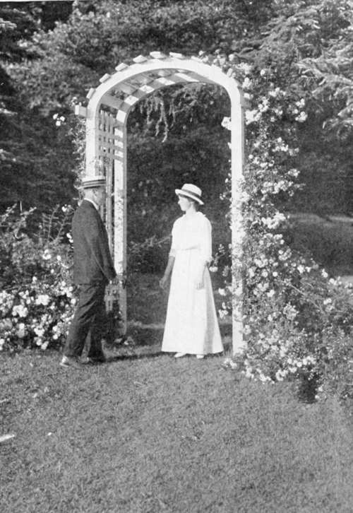

On The Drapery Of Cottages And Gardens. Part 3
Description
This section is from the book "Landscape Gardening", by Andrew Jackson Downing. Also available from Amazon: Landscape Gardening.
On The Drapery Of Cottages And Gardens. Part 3
And now, having glanced at the best of the climbers and twiners, properly so called (all of which need a little training and supporting), let us take a peep at those climbing shrubs that seize hold of a wall, building, or fence, of themselves, by throwing out their little rootlets into the stone or brick wall as they grow up, so that it is as hard to break up any attachments of theirs, when they get fairly established, as it was to part Hector and Andromache. The principal of these are the true Ivy of Europe, the Virginia Creeper or American Ivy, and the Trumpet Creepers (Bignonias or Tecomas).
These are all fine, picturesque vines, not to be surpassed for certain effects by anything else that will grow out of doors in our climate. You must remember, however, that, as they are wedded for life to whatever they cling to, they must not be planted by the sides of wooden cottages, which are to be kept in order by a fresh coat of paint now and then. Other climbers may be taken down, and afterwards tied back to their places; but constant, indissoluble intimacies like these must be let alone. You will therefore always take care to plant them where thy can fix themselves permanently on a wall of some kind, or else upon some rough wooden building, where they will not be likely to be disturbed.
Certainly the finest of all this class of climbers is the European Ivy. Such rich masses of glossy, deep green foliage, such fine contrasts of light and shade, and such a wealth of associations, is possessed by no other plant; the Ivy, to which the ghost of all the storied past alone tells its tale of departed greatness; the confidant of old ruined castles and abbeys; the bosom companion of solitude itself, —
"Deep in your most sequestered bower Let me at last recline, Where solitude, mild, modest flower, Leans on her ivy'd shrine".
True to these instincts, the Ivy does not seem to be naturalized so easily in America as most other foreign vines. We are yet too young — this country of a great future, and a little past.
The richest and most perfect specimen of it that we have seen, in the northern states, is upon the cottage of Washington Irving, on the Hudson, near Tarrytown. He, who as you all know, lingers over the past with a reverence as fond and poetical as that of a pious Crusader for the walls of Jerusalem — yes, he has completely won the sympathies of the Ivy, even on our own soil, and it has garlanded and decked his antique and quaint cottage, "Sunnyside," till its windows peep out from amid the wealth of its foliage, like the dark eyes of a Spanish Senora from a shadowy canopy of dark lace and darker tresses.
The Ivy is the finest of climbers, too, because it is so perfectly evergreen. North of New York it is a little tender, and needs to be sheltered for a few years, unless it be planted on a north wall, quite out of the reach of the winter sun); and north of Albany, we think it will not grow at all. But all over the middle states it should be planted and cherished, wherever there is a wall for it to cling to, as the finest of all cottage drapery.*
After this plant, comes always our Virginia Creeper, or American Ivy, as it is often called (Ampelopsis). It grows more rapidly than the Ivy, clings in the same way to wood or stone, and makes rich and beautiful festoons of verdure in summer, dying off in autumn, before the leaves fall, in the finest crimson. Its greatest beauty, on this account, is perhaps seen when it runs up in the centre of a dark cedar, or other evergreen, — exhibiting in October the richest contrast of the two colors. It will grow anywhere, in the coldest situations, and only asks to be planted, to work out its own problem of beauty without further attention. This and the European Ivy are the two climbers, above all others, for the exteriors of our rural stone churches; to which they will give a local interest greater than that of any carving in stone, at a millionth part of the cost.
* The experience of another 70 years does not bear out Mr. Downing's recommendation of the English ivy. There are only a few localities, mostly on the eastern seaboard, where it can be used with satisfaction. -F. A. W.
The common Trumpet Creeper all of you know by heart. It is rather a wild and rambling fellow in its habits; but nothing is better to cover old outside chimneys, stone outbuildings, and rude walls and fences. The sort with large cup-shaped flowers is a most showy and magnificent climber in the middle states, where the winters are moderate, absolutely glowing in July with its thousands of rich orange-red blossoms, like clusters of bright goblets.*
We might go on, and enumerate dozens more of fine twining shrubs and climbing roses; but that would only defeat our present object, which is not to give you a garden catalogue, but to tell you of half a dozen hardy shrubby vines, which we implore you to make popular; so that wherever we travel, from Maine to St. Louis, we shall see no rural cottages shivering in their chill nudity of bare walls or barer boards, but draped tastefully with something fresh, and green, and graceful: let it be a hop-vine if nothing better, — but roses, and wistaria, and honeysuckles, if they can be had. How much this apparently trifling feature, if it could be generally carried out, would alter the face of the whole country, you will not at once be able to believe. What summer foliage is to a naked forest, what rich tufts of ferns are to a rock in a woodland dell, what "hyacinthine locks" are to the goddess of beauty, or wings to an angel, the drapery of climbing plants is to cottages in the country.
One word or two about vines in the gardens and pleasuregrounds before we conclude. How to make arbors and trellises is no mystery, though you will, no doubt, agree with us, that the less formal and the more rustic the better.* But how to manage single specimens of fine climbers, in the lawn or garden, so as to display them to the best advantage, is not quite so clear. Small fanciful frames are pretty, but soon want repairs; and stakes, though ever so stout, will rot off at the bottom, and blow down in high winds, to your great mortification; and that, too, perhaps, when your plant is in its very court dress of bud and blossom.
* Given in Bailey's "Cyclopedia" as Campsis Chinensis. — F. A. W.
Fig. 32. Climbing Roses on a Garden Gate.
Now the best mode of treating single vines, when you have not a tree to festoon them upon, is one which many of you will be able to attain easily. It is nothing more than getting from the woods the trunk of a cedar tree, from ten to fifteen feet high, shortening-in all the side branches to within two feet of the trunk (and still shorter near the top), and setting it again, as you would a post, two or three feet deep in the ground.
Cedar is the best; partly because it will last for ever, and partly because the regular disposition of its branches forms naturally a fine trellis for the shoots to fasten upon.
Plant your favorite climber, whether rose, wistaria, or honeysuckle, at the foot of this tree. It will soon cover it from top to bottom, with the finest pyramid of verdure. The young shoots will ramble out on its side branches, and when in full bloom, will hang most gracefully or picturesquely from the ends.
The advantage of this mode is that, once obtained, your support lasts for fifty years; it is so firm that winds do not blow it down; it presents every side to the kindly influences of sun and air, and permits every blossom that opens to be seen by the admiring spectator.
* This strong recommendation of "rustic" architecture would not meet the modern taste; nor would the following plan of planting rustic cedar posts in the lawn for the support of climbing vines. This was once very much the vogue, but the present editor feels compelled to disagree strongly with Mr. Downing's approval of it. — F. A. W.
Continue to:
- prev: On The Drapery Of Cottages And Gardens. Part 2
- Table of Contents
- next: Chapter XI. A Few Hints On Landscape Gardening